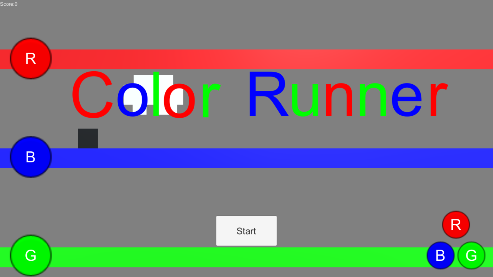

Color Runner

作品概要
ジャンル ：横スクロールアクション
プラットフォーム：スマートフォン
目まぐるしく色が変わる世界。
色に支配された世界を駆けろっ！
色の変化で通れた道が通れなくなり、通れなかった道は通れるようになる。
最適なルートを判断し、世界の最果てへと到達するのだ。
ゲーム制作
開発環境：Ｕｎｉｔｙ
開発期間：１０日前後（１日３～５時間）
開発人数：１人
１年次の冬季長期休暇中に制作。
今回の目的は「スマートフォン向けゲームの制作」。
それまで作ってこなかったジャンルであったため、挑戦したいと思った。
苦労したのは座標変換。スクリーン座標とワールド座標の転換を知らなかったが故、
どのようにワールド座標を指定するかを考えた。
上・中・下の３レーンある道を移動するのにタップした位置を取得しようかと考えた。
しかし、狭いスマートフォンの画面ではプレイヤーの認識と実際のタップ位置のずれが発生すると
考えられたためそれぞれの道の左端にボタンをつけることで実現した。
また、タップ位置にエネミーがいるかの判断にも苦労した。
タップで攻撃ができるのだが、その判定をどう取ればいいのかわからずに苦労した。
最終的には数フレームの間だけエネミーを倒すオブジェクトをタップ位置に生成することで擬似的に表現した。